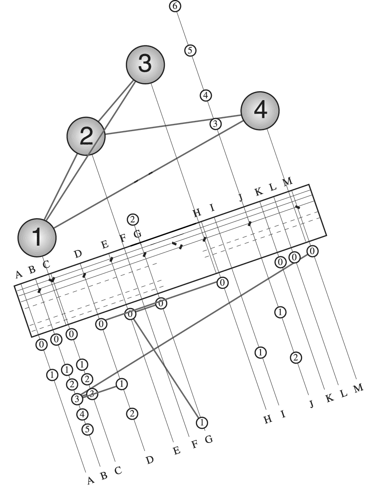

Chapter 4
Interferometers in practice
Figure 4.1: The optical beam train for one arm of the Magdalena Ridge Observatory Interferometer (MROI). SVG file:
beampath.svgFigure 4.2: Schematic layout of a siderostat light collector SVG file:
siderostat.svgFigure 4.3: Schematic layout of an alt-alt telescope. The tertiary mirror rotates at half the angular rate of the primary-secondary pair in order to keep the output beam fixed. SVG file:
alt-alt-telescope.svgFigure 4.4: Collecting elements: the siderostats on SUSI (left, from ) and the alt-az auxilliary telescopes of the VLTI (right, courtesy ESO).
Figure 4.5: Diffraction of a beam propagating through the beam relay system. SVG file:
rayleigh-distance.svg 
Figure 4.6: Array layout for the VLTI. The layout includes both the 8-metre-diameter Unit Telescopes (shown as large circles) and the 30 pads for the 1.8-metre-diameter Auxiliary Telescopes (shown as smaller circles). The baselines which were used for calibrator observations by are overlaid on the diagram. SVG file:
vlti-layout-vinci.svgFigure 4.7: Array layout for the inner portion of the NPOI. The siderostat stations active in the late 2014 observing season are shown as filled squares. The fixed "astrometric" stations have labels beginning with "A", while the "imaging" stations, which can take movable siderostats, have labels beginning with "N", "E" or "W" depending which arm of the array they are on. The outer imaging stations of the array are not shown: these extend to baselines of up to 450 m (image courtesy Don Hutter).
Figure 4.8: Geometry for calculating the change of delay with time due to Earth rotation. SVG file:
rotating-vector.svgFigure 4.9:
Schematic diagram of a delay line showing the path of the starlight through the "cat's eye" retroreflector. The path of the laser metrology beam has the same geometry as for the starlight beam, but in a plane perpendicular to the page. SVG file:
delay-line.svg
[c]0.6
 [c]0.6
[c]0.6

Figure 4.12: Schematic outline of two types of multi-telescope beam combiners, a pairwise combiner (upper) and an all-in-one combiner (lower). SVG file:
pairwise.svg SVG file:
all-in-one.svg
Figure 4.13: Multiplexing 3 beams into a single fringe pattern in the image plane (upper) and the modulus of the Fourier transform of the fringe pattern showing peaks at three different frequencies (lower). SVG file:
image-plane-multiplexing.svgFigure 4.14: Schematic for the 4-way temporally-multiplexed beam combiner in the COAST interferometer []. BS indicates beamsplitters where the beams are combined. The output is on four detectors da-dd which all receive the superposition of all four input beams. OPD modulation takes place external to the beam combiner.
Figure 4.15: The scanning pattern for the temporally-multiplexed combiner in Figure
4.14.
The scanning velocities are at -3, -1, +2, and +3 times a base velocity. This ``non-redundant" arrangement of velocity
differences means that the interference fringes between the 6 pairs of input beams all appear at different fringe frequencies.
Figure 4.18: Spectrally-dispersed fringes from the AMBER beam combiner. The spectral dispersion is in the vertical direction: each horizontal line on the right-hand side is a spatially coded fringe at a given wavelength. The left-hand pair of channels are photometric calibration channels and so have no fringes. From .
Figure 4.19: The layout of the integrated optics chip used in the PIONIER beam combiner. From .
Figure 4.20: The optical setup for an aperture masking experiment on a large single telescope. SVG file:
aperture-masking.svg
Figure 4.21: The mask layout for a Keck aperture masking experiment (left) and the resulting (u,v)coverage (right). From .


{kind=link}
{kind=link}
{kind=link}
{kind=link}
{kind=link}
{kind=link}
{kind=link}
{kind=link}
{kind=link}
{kind=link}
{kind=link}
{kind=link}
{kind=link}
{kind=link}
{kind=link}
{kind=link}